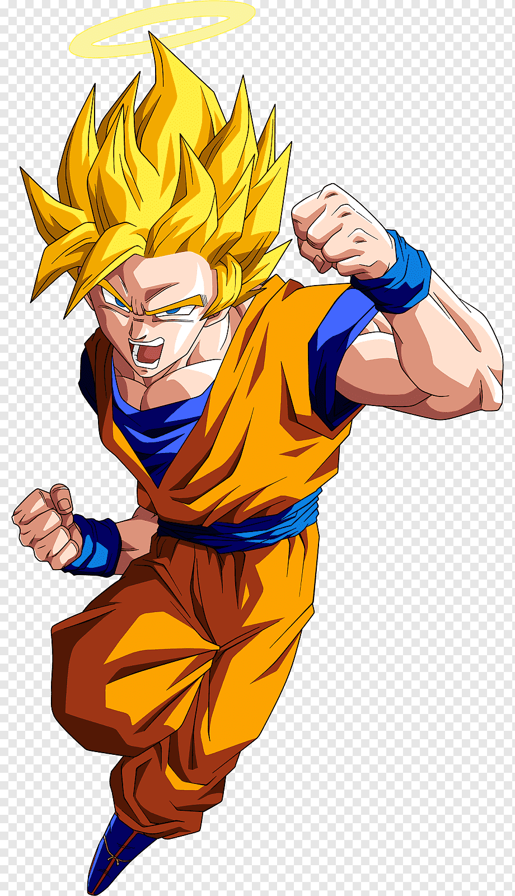
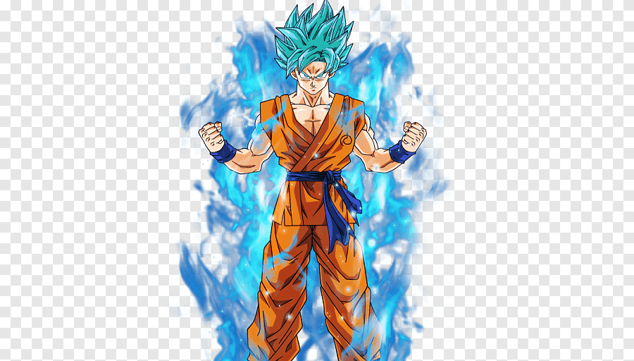

Sobre mim
Tenho 17 anos, estudo no 3º ano do Ensino Médio e sou apaixonado por matemática e computação. Também admiro muito música, que sempre foi uma parte importante da minha vida. Quero seguir carreira na área de exatas e tecnologia.
Contato
Email: evertonjuninho2019@gmail.com
Goku Forma Base
Goku, o guerreiro Saiyajin criado na Terra, começou sua jornada com essa forma. Mesmo sem transformações, ele já demonstrava um poder impressionante e um coração puro.

Goku Super Saiyajin 1
O lendário momento em que Goku se transforma em Super Saiyajin pela primeira vez aconteceu durante a batalha contra Freeza. Com seus cabelos dourados e aura brilhante, ele levou seu poder a um novo patamar.
Goku Super Saiyajin Blue
Unindo o poder do Super Saiyajin com a energia divina do Ki dos deuses, Goku alcança o Super Saiyajin Blue. Esta forma combina imenso poder com controle e velocidade aprimorados.
